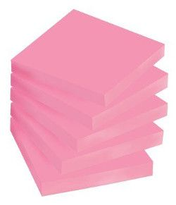

Workshop Kickoff
Contributors
start
Welcome to the Workshop!
- Practical Info
- Introduction Round
- Sticky Notes
- Get to know our audience
- Get set up
- Give us Feedback!
Speaker Notes You can use these slides as a way to introduce your workshop.
This first slide has links to each section to easily pick and choose which parts you want to use and in which order.
Each slide in this deck has a link back to this starting slide (at the bottom).
practical
Practical Info
- Programme
- Coffee / Lunch / Drinks / Dinner
-
Other
- Galaxy Project’s Code of Conduct
.footnote[back to start]
Speaker Notes Discuss any practicalities now, for example
- Show or discuss the programme
- Will there be coffee breaks? Where?
- Will there be lunch? Where?
- Will there be a social event afterwards? Where?
- Do participants need to sign an attendance form?
- Where are the bathrooms, emergency exits?
introductions
Introduce yourself
.left-column70[
- For example:
- Who are you?
- Where are you from?
- What do you do?
- Why did you join this workshop?
- What experience do you have with the topics of this workshop? ]
.right-column30[ .image-90[] ]
.footnote[back to start]
Speaker Notes Go around the room and have everybody introduce themself briefly.
This is a good opportunity to get a better sense of the background of your audience.
These questions are just a guide
stickies
Sticky Notes
.left-column70[
- Status indicators
- sticky-note Green: Used to indicate your progress
- sticky-note Pink: Put on your screen if you need help
- End-of-day feedback
- sticky-note Green: what did you like?
- sticky-note Pink: what could we improve tomorrow / next time?
- Leave them on the whiteboard at the end of the day ]
.right-column30[ .image-75[]
.image-75[ ]
]
]
]
| .footnote[*your sticky notes may be different colours | back to start] |
Speaker Notes Get two different coloured sticky notes, and give one of each to each of the participants
Pink/red/orange: Have learners put this on their screen if they get stuck and would like a helper to come over. This will save them having to keep their hand raised if all helpers are busy.
Green/Yellow: You might give an assignment (“do this section on your own”, “try to answer this question box with your neighbour”) and want to continue centrally afterwards. By asking participants to put up the sticky when they are done, you will have a sense of when most of your learners are ready to continue.
Request to instructors:
- Collect all sticky notes and add them to this GitHub issue after the workshop to share the feedback and ideas for improvements with the GTN community.
- Add any feedback received from yourself, other instructors, and helpers here as well
audience
Get to know our audience
- What is your background knowledge and experience?
- Next will be a series of yes / no questions
- Answer by holding up a sticky note
- There are no wrong answers!
.pull-left[
.image-25[ ]
]
YES
]
.pull-right[ .image-25[]
NO
]
| .footnote[back to start | to blank question] |
Speaker Notes
- If not using sticky notes, you can ask learners to raise their hand if their answer is yes (or thumbs up/down for yes/no)
- The following slides are a series of questions you might like to ask
- Not all of these may be relevant for your workshop, but you can ask your own tailored questions using this blank question slide.
I have heard of Galaxy before
.pull-left[
.image-25[]
YES
]
.pull-right[ .image-25[]
NO
]
| .footnote[back to start | to blank question] |
I have used Galaxy before
.pull-left[
.image-25[]
YES
]
.pull-right[ .image-25[]
NO
]
| .footnote[back to start | to blank question] |
Speaker Notes Follow up with people answering “yes”
- Was this another workshop? Or on your own?
- What kind of analysis did you do?
- How was your experience with it? How long ago?
I have run bioinformatics tools or analyses before
.pull-left[
.image-25[]
YES
]
.pull-right[ .image-25[]
NO
]
| .footnote[back to start | to blank question] |
Speaker Notes Possibly follow up with people answering “yes”
- Which tools? Commandline? Galaxy? Both? Other?
- What was your experience with it?
I have seen a FASTQ file before
.pull-left[
.image-25[]
YES
]
.pull-right[ .image-25[]
NO
]
| .footnote[back to start | to blank question] |
Speaker Notes You can follow this up with other file formats participants will encounter today
- BAM/SAM
- VCF
- ..
This will give you an idea of how much time you should spend explaining the file formats during the workshop
I have used a genome browser before
.pull-left[
.image-25[]
YES
]
.pull-right[ .image-25[]
NO
]
| .footnote[back to start | to blank question] |
Speaker Notes Possible follow-up: which genome browser? IGV? UCSC? JBrowse?
If the majority of your audience have never used a genome browser before, you may want to spend some extra time explaining the concept and interface.
blankquestion
I ..
.pull-left[
.image-25[]
YES
]
.pull-right[ .image-25[]
NO
]
.footnote[back to start]
Speaker Notes Use this slide for any other questions specific to your workshop and/or audience
E.g. ask about familiarity with
- The data used in your workshop
- The file formats, tools they will encounter
- Biological and bioinformatic concepts covered in this workshop
Examples:
- I know what paired-end sequencing is
- I have programmed in R before
- I have performed a differential gene expression analysis before
- I have an Illumina sequencer in my lab
- ..
setup
Setup for workshop
- Training materials: https://training.galaxyproject.org
-
Galaxy (an instructor will tell you which Galaxy to use)
-
UseGalaxy.fr https://usegalaxy.fr
-
UseGalaxy.eu https://usegalaxy.eu
-
UseGalaxy.org https://usegalaxy.org
-
UseGalaxy.org.au https://usegalaxy.org.au
-
- Register/log in
- You may receive an e-mail with an activation link
- Optional: link to join workshop for TIaaS
.footnote[back to start]
Speaker Notes Use these slides to get everybody set up for the hands-on sessions.
- Is everybody logged into the correct Galaxy instance?
- Does everybody have the training material website open?
Tip: Ask participants to put sticky note up when successfully logged in to Galaxy and found the training manual.
tiaas
Training Infrastructure as a Service (TIaaS)
- UseGalaxy.eu provides free infrastructure for workshops
- Get dedicated resources (shorter job queue)
- Join link: https://usegalaxy.eu/join-training/<joinID>
- An instructor will tell you the
joinID
- An instructor will tell you the
.image-50[ ]
]
.footnote[back to start]
Speaker Notes To request TIaaS resources from UseGalaxy.eu for your workshop, follow the instructions in this tutorial (preferably 2 or more weeks before your workshop).
feedback
Feedback
- Please fill out the feedback form when you complete a tutorial!
- This helps us improve these materials in the future
- Can be found at the end of every tutorial
- Spot a typo or mistake? Want more information about a step? Have a great idea to make this training better? let us know!
.image75[ ]
]
.footnote[back to start]
Speaker Notes Emphasize that this feedback form is only for feedback about the training materials themselves, other feedback regarding workshop or the server etc can be left via the sticky notes or other means.
fun
Have fun!
Speaker Notes This is the most important step of all!
Thank you!
This material is the result of a collaborative work. Thanks to the Galaxy Training Network and all the contributors! Tutorial Content is licensed under
Creative Commons Attribution 4.0 International License.
Tutorial Content is licensed under
Creative Commons Attribution 4.0 International License.